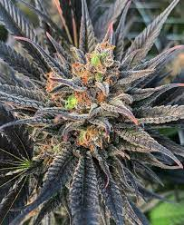
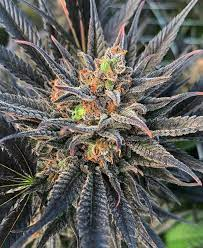

BLUE DREAM STRAINS

Blue Dream is a Hybrid, but it is Sativa-dominant at about 60 percent Sativa and 40 percent Indica. Most importantly, this strain tends to have a high cannabinoid content, specifically where THC is concerned at between 15 and 27 percent.
Blue Dream is the result of crossing Blueberry and Haze, both of which have a significant reputation when it comes to noteworthy strains. Blue Dream is one of those strains that come across with one primary flavor attribute, which happens to be sweet berries.
What is the typical usage of it ?
What is the typical usage of it ?
Blue Dreams is the perfect blend of Sativa and Indica. As a Sativa-dominant hybrid strain, Blue Dream is typically used during the day. This strain is said to provide uplifting and cerebral effects that can help with creativity, motivation, and heightened focus. Blue Dream is also popular among medical marijuana patients for its ability to provide relief from pain, anxiety, depression, muscle spasms, and stress. This strain can also be used to help with insomnia.
What is the growing nature of it ?
If you’re a newbie looking for an easy strain to grow, Blue Dream is your gal. She can thrive in both outdoor and indoor grows. The flowering time on this gem is around 10 weeks for indoor systems, or late September to early October for outdoor set-ups. The yield is high with around twenty-one ounces per plant, and in order to keep this gal happy indoors, you’ll want to top early as these beauties can grow upwards of five feet.
How to spot it ?
Almost any dispensary will have Blue Dream, but a quality example should have medium-large buds with noticeable trichomes and a distinct sweet smell. There is a lot of poorly grown commercial Blue Dream around because it is such a productive variety, so you may have to weed (!) through some crap to find a sample that lives up to its lofty reputation.
What are the effects ?
With a relatively high THC range that averages at a low of 17% and a high of 24%, this dreamy bud has more than just good looks and flavor to bring to the table. The CBD and CBN levels reach 2% and 1% respectively, making this a popular strain for treating a myriad of ailments. Blue Dream's high is all the best parts of its parentage wrapped neatly into a flavor-packed, beautifully balanced package. It begins with a cerebral rush, bringing with it motivation and heightened focus, so enjoy this through any jam-packed schedule. As the high builds you fall into an ultra-relaxed state, leaving you feeling hazy and totally calm.
 
